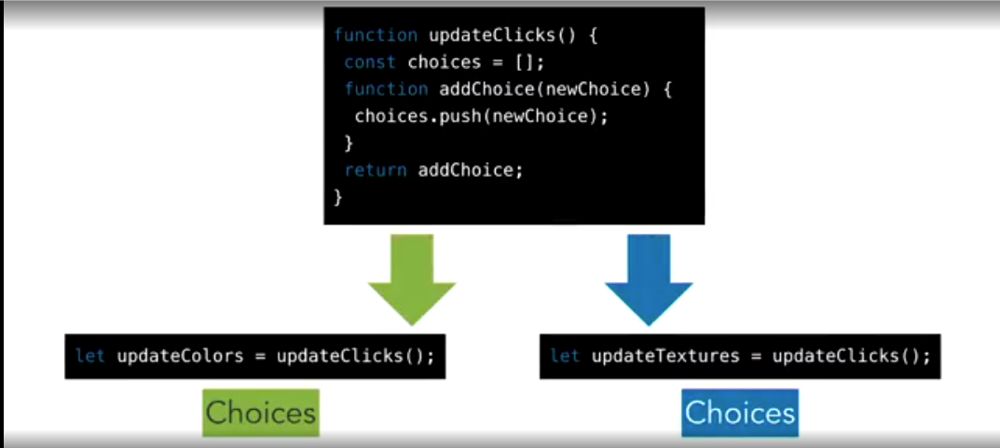

The Saga of the Dragon Clicker App
A story about being a programmer hired by a needy client
...and YOU are the protagonist!
MCC: Section 2
A story about being a programmer hired by a needy client
...and YOU are the protagonist!
I'm your new project manager at our new Dev Agency
It's called "Control Alt Develop"
let div = document.querySelector('.dragon');
div.addEventListener('click', function(e){
//the element has been clicked...
// do stuff here, like increment the counter variable
});How about mutating a global variable in the listener callback?
It's simple. But it works!
let clicks = 0
let dragon = document.querySelector('.dragon')
dragon.addEventListener('click', function(e){
// update our app data:
clicks += 1
// rerender what our app displays:
dragon.innerText = '🐉 ' + clicks
});Is it scaleable?
Is it easy to manage or add to?
Could another developer join the project and easily understand the app?
Create a short blog post (1 or 2 paragraphs) that explain how you solved this challenge and why
/reflections
JonDoe.md)
/reflections
repo
It's typical for reqs to change several times over the development lifecycle. To survive as a developer we'll have to learn to roll with it & be adaptive.
All software development is an iterative process
(i.e. many steps - Mostly forward, a few backward)
Same app, TWICE THE DRAGONS!
The client now wants 2 dragons. Can we do it?
We could just add a second variable and eventListener...
But, that's more loose global variables... Would that continue to scale?
They loved Dragon 🎭 Duo so much that they want MORE DRAGONS!
They request the same reqs as Dragon 🎭 Duo but with 5+ clickable dragons.
At this scale,
the simple approach
isn't gonna cut it.
We need a better way.
clicks variables into objects?
dragonStamper function?
onclick attribute? .dragon for the default dragon appearance?
.fire, .water, etc to customize each dragon type?
Dragon 📈 Gang is starting to grow out of control huh?
How did you solve it this time?
Did the old approach work? If not, why?
Did you have to try something new? If so, what?
They want to be able to spawn as many dragons as they'd like!
nav with a list of at least 5 dragon types
nav is clicked,
Before we dive into a framework like React,
let's explore
patterns for reusing and organizing code and how it helps us make
repeated tasks easier...
Introducing: Design Patterns!
Some Examples from the "Gang Of Four" book:GoF Patterns for Javascript Developers
a.k.a The Factory Function: a function that returns an object
factoryFunction(name, carMake, age) {
const canDrive = age > 16 ? true : false
return {
name,
carMake,
canDrive,
id: Math.random(),
timestamp: Date.now()
}
}
const bobby = factoryFunction('Bobby', 'Ford', 23)
factoryFunction(name, carMake, age) {
const canDrive = age > 16 ? true : false
// You can return a frozen object too!
return Object.freeze({
name,
carMake,
canDrive,
id: Math.random(),
timestamp: Date.now()
})
}
const bobby = factoryFunction('Bobby', 'Ford', 23)
Similar to a Template Function (a function that returns a template of some kind).
Remember our textStamper function? That's a template function
How can we use a Factory Function & a Template Function together to solve Dragon Spawner?
// normally:
plusButton.addEventListener('click', () => increment())
// but we can provide enums to functions to adjust their behavior:
delayedButton.addEventListener('click', () => increment('withDelay'))
plus2Button.addEventListener('click', () => increment('by2'))We'll learn about three ways to encapsulate our code
All of these let us wrap our code inside of a "black box" so we can expose only the parts of it that we deliberately intend to and we can keep the nitty gritty implementation details hidden & inaccessible inside.
Little packages for our code
import & export keywords, we can modularize code &
organize it into a unit defined by a file.import myArr from './data.js'
const power = 3
function module(arr) {
let biggerArr = myArr.concat(arr)
return biggerArr.map(item => item ** power)
}
export default moduleexport let name1, name2, …,;
export const name1 = …, name2 = …, …;
export function functionName(){...}
export class ClassName {...}
// Defaults
export default expression;
export default function (…) { … }import defaultExport from "module-name.js";
import * as name from "module-name.js";
import { export1 } from "module-name.js";
import { export1 as alias1 } from "module-name.js";
import { export1 , export2 } from "module-name.js";<html>
<head>
</head>
<body>
<!-- HTML document -->
<script src="index.js" type="module">
</script>
</body>
</html>
// index.js
import { sortString } from 'utils.js'
const sorted = sortString('hello world')
// more related code here...
export { sorted }// utils.js
export function sortString(str){
const split = str.split('')
const sorted = split.toSorted(
(a, b) => a.localeCompare(b)
)
return sorted.join('')
}Before Modules, code encapsulation was accomplished with the Revealing Module Pattern using IIFEs
These create a private scope
Take advantage of Function Scope by using an IIFE to create a "Closure"
(function (parameters){
// use the arguments you pass in
// to do stuff here
})(arguments)
// same effect, but w/ arrow function:
(parameters => {
// do stuff w/ arguments here
}(arguments))let publicAPI = (function (a, b){
let privateVar = a + 'our secret';
return [
true,
a + b
]
}(1, 2))
publicAPI[0] // true
publicAPI[1] // 3
privateVar // ReferenceError
privateVar[privateVar] // ReferenceError
publicAPI.privateVar // ReferenceError// Review: Local Scope vs Global
function getSquare(base) {
let power = 2
return base ** power
}
console.log(power) // Reference Error
fn(5) // 25// Nesting & Returning Functions
function getBase(base) {
return function (power) {
base * power
}
}
let raiseToPower = getBase(5)
raiseToPower(3) // 125Global variables are long-lived: until page is discarded (navigate away, close)
Local variables are short-lived: Function invocation
creates them,
Function Return destroys them (garbage collected)
for (let i = 1; i <= 4; i++) {
setTimeout(function() {
console.log(i)
}, 1000*i) // 5 5 5 5
}
for (let i = 1; i <= 4; i++) {
setTimeout(function(x) {
return () => console.log(x)
}(i), 1000*i)
// 1 2 3 4
}let, const,
.forEach
for (let i = 1; i <= 4; i++) {
setTimeout(function() {
console.log(i)
}, 1000*i) // 1 2 3 4
}[...Array(4).keys()].forEach(i => {
setTimeout(function() {
console.log(i)
}, 1000*i) // 0 1 2 3
})let fn = x => y => x + y
// let fn = (x) => (y => x + y)
let n = fn(3)
// Some indefinite amount of time may pass, then:
n(4) // 7
// Could also be invoked at once:
fn(3)(4) // 7Due to referential transparency, these are identical evaluations, despite difference in time.
const add = x => y => x + y
const add = x => {
return y => {
return x + y
}
}
function add(x) {
return function(y) {
return x + y
}
}
// calling add:
const partial = add(1) // return a function with 1 in its closure
const continuation = partial(2) // returns 3, because it added 1 from above with 2
Curried Functions allow us to reuse code by creating Parallel Closures.
Closures can create multiple instances of closed over variables that are independent of each other.
ES6 classes are a syntactic sugar over the prototype-based OO pattern. It's not true Classical Inheritance that other languages have (like Java)
Having a single convenient declarative form makes class patterns easier to use, and encourages interoperability.
Classes support prototype-based inheritance, super calls,
instance/static methods, constructors and finally private identifiers.
Class Keywordclass Point2D {
constructor(x, y) {
this.x = x;
this.y = y;
}
// ...define more variables and methods here
}
const instanceXYPoint = new Point2D(1, 2)
instanceXYPoint.x // 1
instanceXYPoint.y // 2
constructorsupernew keywordgetset#let obj = {
// set a custom __proto__
__proto__: theProtoObj, // the constructor
// Methods
toMyString() {
// Super calls
return "My " + super.toString();
}
}
obj.toMyString() // 'My [object Object]'
obj.toString() // '[object Object]'Along with property shorthand & computed properties, these also bring object literals and class declarations closer together, and allow object-based design to benefit from some of the same conveniences
Classical vs Prototypal Inheritance
They lack the classical inheritance model like other OOP language classes
They use Prototypal Inheritance just like Objects.
class Vegetable {
constructor(name){
this.name = name
}
}
const carrot = new Vegetable('carrot');
console.log(carrot.name); // 'carrot'function vegetable(name) {
return {
name
}
}
const carrot = vegetable('carrot')
console.log(carrot.name) // 'carrot'class TempConverter {
constructor(F) {
this.F = F;
}
get boilsWater() {
return this.F >= 212;
}
get C () {
return (5 / 9) * (this.F - 32)
}
set C (degrees) {
this.F = (degrees * 9.0) / 5 + 32;
}
} // can't use arrow function syntax for getters/setters because of lexical scopingclass Person {
constructor(name, email, address) {
this.name = name
this.email = email
this.address = address
}
getInfo() {
return {
Name: this.name,
Email: this.email,
Address: this.address
}
}
}class Employee extends Person {
constructor(job, address, ...args) {
// super is a link w/ Parent Class
super(...args) // calls parent w/ rest of args
this.job = job
this.address = address // Can overwrite parent properties
// such as with the work address here
}
getInfo() { // Can overwrite methods too
return {
Name: this.name,
Email: this.email,
Address: this.address,
Job: this.job
}
}
}
supersuper maintains the connection between parent and child
classes - It establishes the inheritance chain.
super method is used to call parent's constructor & populates the class with all of it's
parents properties & methods// default will inherit from Object
constructor() {}
// For the derived class, if you don't specify a constructor, it will use
constructor(...args) {
super(...args);
}const joPerson = new Person(
"Jo", "jo@home.com", "123 Home Ave"
)
const joEmployee = new Employee(
"Developer", "321 Work Ave", "Jo", "jo@work.com"
)
console.table({
emp: joEmployee.getInfo(),
per: joPerson.getInfo()
})

For determining or asserting the chain of inheritance
Binary Operator: instanceof()
const joEmployee = new Employee(
"Developer", "321 Work Ave", "Jo", "jo@work.com"
)
joEmployee instanceof Person // true
// OR check the __proto__ property (references the parent)
joEmployee.__proto__ // Person {constructor: ƒ, getInfo: ƒ}Classes and objects from the essential part of Object-oriented programming, where a class can be considered as a construct that encapsulates a group of variables and methods; whereas, an object acts as member or instance of that class.
| Class | Object |
|---|---|
| A class is a blueprint from which you can create the instance, i.e., objects. | An object is the instance of the class, which helps programmers to use variables and methods from inside the class. |
| A class is used to bind data & methods into a single unit. | Object acts like a variable/instance of the class. |
| Classes have logical existence (exist in code). | Objects have a tangible existence (exist in memory). |
| A class doesn't take any memory spaces when a programmer creates one. | An object takes memory when a programmer creates one. |
| The class has to be declared only once. | Objects can be declared several times depending on the requirement. |
Private members on a class are fully protected and inaccessible, except within the class block scope
class ClassWithPrivate {
#privateField = 42;
#privateMethod() {
console.log("can't access me directly")
return this.#privateField
}
logPrivateMethod() {
console.log(this.#privateMethod())
}
}const instance = new ClassWithPrivate()
// Public members can be access, called or deleted
instance.logPrivateMethod() // works
// Private members can't be accessed nor deleted
instance.#privateField === 42 // Syntax Error
instance.#privateMethod() // Syntax Error
delete instance.#privateMethod() // Syntax Errorstatic KeywordFor running some procedural code once for a class & sharing it between instances
class ClassWithPrivateStatic {
static field = 'some value'
static method () {
return 42;
}
static {
// …setup code to run once
}
}Code in a constructor runs once per instance, while code in a static block runs
once per class declaration.
__proto__ property).

Subassemblies of Code that slot into an entire application
...is when a codebase has many connections and no organization
Number of Phones: 2
Number of Connections: 1
Sad Spaghetti
At the point you have 45 phones, you'll have a thousand connections!!!
Each of these connections represents a unique function, method or configuration parameters
Exponential relationships are scary & hard to manage!
You won't have scalable, extensible, stable or clean code anymore
Let's go from 👇
to this! ☝️
What if we add something that can manage and route those connections
...like a Hub!
Number of Phones: 15
Number of Connections: 15
Number of phones and connections scale linearly!
The code is...
In programming, there is a well established pattern that uses this
Hub approach
It's called the MVC pattern
Model - View - Controller
How to organize the responsibilites (or concerns) of our code
MV - C / VM / P / *️⃣
Let's see how we can use an MVC pattern in a small app!
We're going to code up a note-taking app
Can you extend our MVC note-taker app with these new features?
They heard about this MVC thing & they want their Dragon Clicker App to use it
Planning our MVC Refactoring
render function to repaint the View & call it
after any updates to the model

These concepts can organize our MVC pattern
increment() or
getDragons() functions?
// model.js
const dragonList = [ // the navbar types
'fire',
'air',
...
],
const dragons = [
{id: 0, type: 'fire', clicks: 0, img: '🐉'},
{id: 1, type: 'air', clicks: 0, img: '🐉'},
...
],
dragonFactory(type) {...} // could go in Model or Controllerids distinguish dragons with the same
type!
// view1.js // manages the nav view
const nodeNav = document.querySelector('nav')
initializeView1() {...}
templateFactoryFn(list) {...}
renderView1() {...}
// possibly in view2.js
// manages the display area view
const nodeMain = document.querySelector('main')
initializeView2() {...}
templateFactoryFn(dragon) {...}
renderView2() {...}// controller.js
init() {...}
increment() {...}
getList() {...}
getDragons() {...}
dispatchCommand(action) {...} // often shortened to dispatch()
// dragonFactory(type) {...} // could be here or Model
// hide
// filter
// delete
// modify etc...// model.js
types: ['fire', 'air', ...],
dragons: [
{...}, {...}, ...
],
dragonFactory(type)// view.js
const node = document.querySelector('nav')
init() {...}
templateFactory() {...}
render() {...}
// Could separate into
// MainView & ListView// controller.js
init() {...}
getTypes() {...}
getDragons() {...}
increment() {...}
dispatch(type) {...}Could each of these be in a separate js file? Maybe Modules?
View get called within your Model?
Model get called within your View?
Controller get called in
View and Model?
View and
Model get called within Controller?
The Client loves Dragon 🧬 Spawner: Premium
But they're insisting on one final req change 🤦🏽♀️
The client wants to spice up our clicker app into an actual battle arena game!
hitPoints to the dragon with an initial amount. Keep clicks to track damage points.increment to decrement & reduce hitPoints based on clicks count.click event with the mouseleave event
hitPoints down to zero!